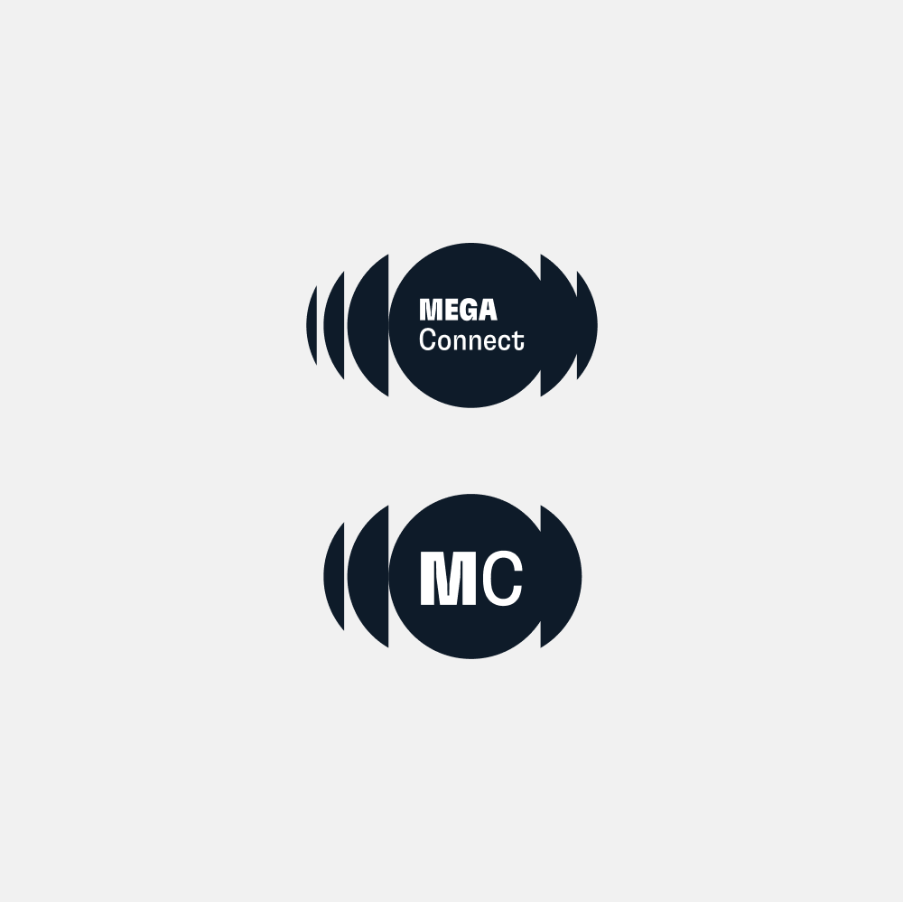
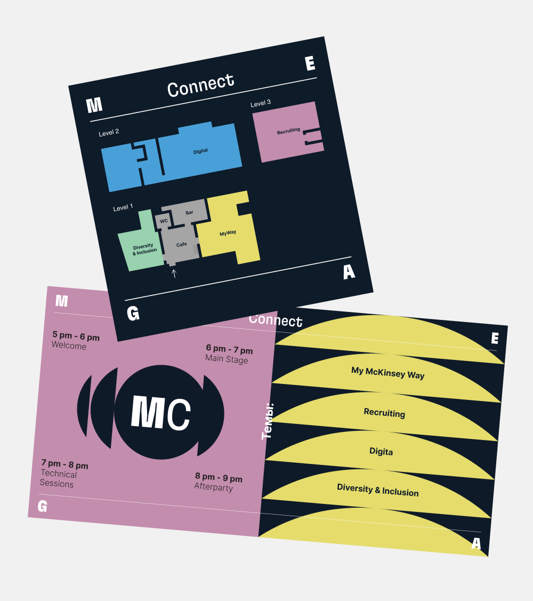
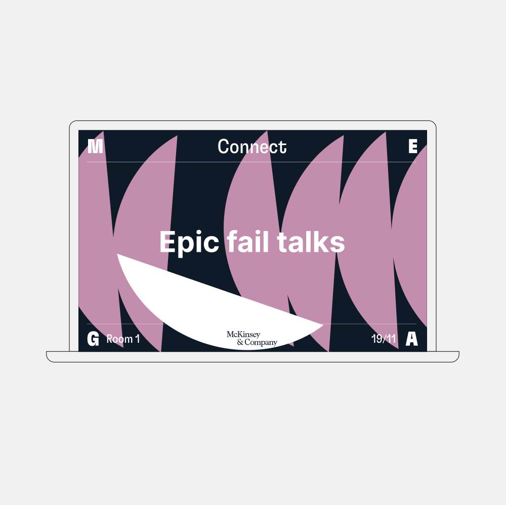
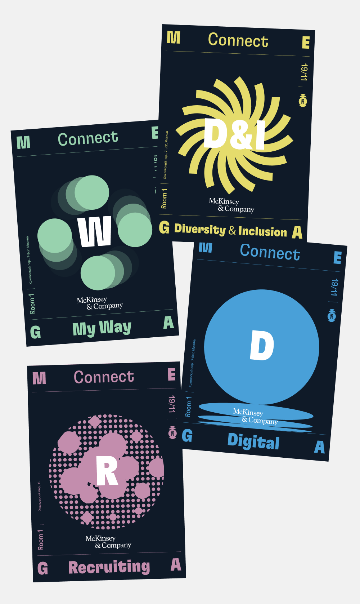
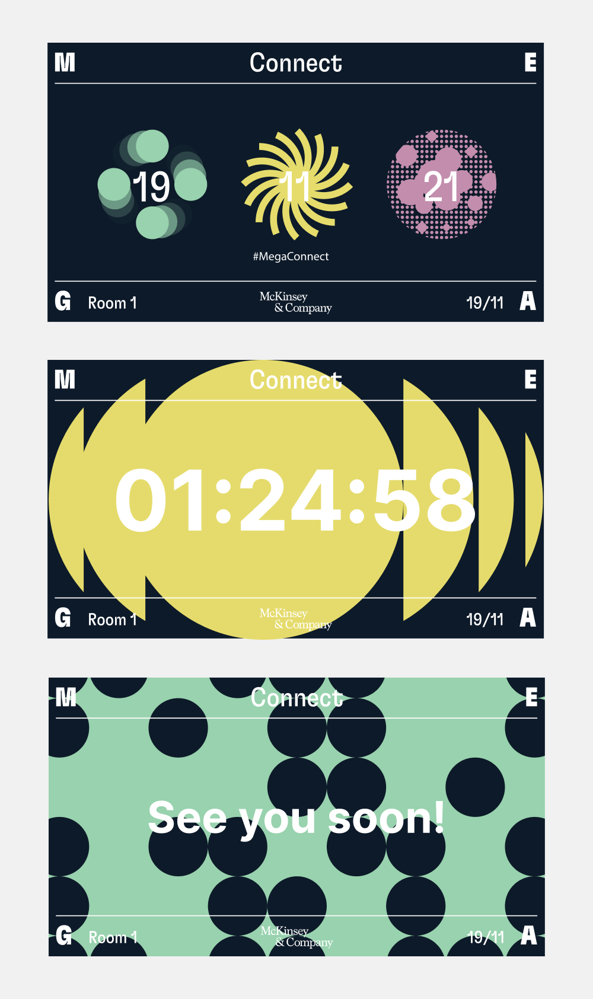

A meetup for young professionals exploring creativity across disciplines needed an identity that could speak to multiple fields at once — without losing coherence.
Leading the creative direction, I developed a visual language that is vibrant yet controlled: distinctive enough to cut through, structured enough to adapt across formats. The system was applied across the full event ecosystem — including the logo, digital banners, presentation templates, posters, event agendas, and wayfinding — demonstrating consistency from screen to print to physical space.




